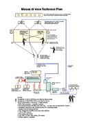

|
PERFORMANCE
Requirements
Messa di Voce
Performance for Voice and Interactive Media
Created 2003 by Golan Levin and Zachary Lieberman
with Jaap Blonk and Joan La Barbara
Contact & Inquiries
Technical Diagram
Fees and Expenses
Required Rental Equipment
Performance Timetable
Publicity Resources
|
Contact
& Inquiries
The Messa di Voce performance is available for touring dates
in 2004 and 2005. Inquiries should be made at least 4 months prior
to the anticipated concert date.
|
|
Technical Diagram
A technical diagram and wiring layout for the Messa di Voce performance
is available in this PDF document:

|
|
Fees and Expenses
A fee structure for Messa di Voce performances is available
on request. Please contact us.
|
|
Required Rental Equipment
Performances of Messa di Voce require the venue to
provide certain audiovisual equipment, including video projectors,
sound support, etc. Generally we have found that the rental of this
equipment costs less than €5000. Venues should provide:
Video Equipment:
- 2 XVGA video projectors, at least 2000 Lumens
- 2 projection screens, at least 4mx3m
- 2 VGA Distribution Amplifiers (two-way video splitters)
- 2 VGA cables, 15 meters
- 2 coax video cables, 15 meters, 75-ohm
Audio Equipment:
- Stereo house PA sound support
- 16-channel Mackie or equivalent audio mixer
- 2 Sennheiser Evolution RX/TX wireless units (for mics)
- 2 sets wireless in-ear monitors (e.g. Shure)
- assorted audio cable & connectors
Stage Equipment:
- 6 500-watt theater lights, with
- electronic dimmers,
- adjustable barn door enclosures,
- multiple sheets of Dark Red lighting gel,
- free-standing fixtures/stands
Computer Equipment:
- live Internet connection (ISDN+)
- 4 LCD or CRT computer screens, XVGA
- 1 8-port Network hub
Furniture:
- 2 standard desks
- 3 chairs
|
|
Performance Timetable
The Messa di Voce performance has a complex setup
phase, involving careful adjustments to our sound system and computer-vision
tracking systems. For this reason, we require the following timetable:
- All equipment listed above, including audio sound support and
video projection systems, should be on-site and installed three
full days prior to the performance.
- Team members Golan Levin (software), Zach Lieberman (software),
and Greg Shakar (sound engineering) require at least three
full days to prepare the concert, and should therefore arrive
on-site at least 4 days prior to the concert.
- Vocalists Joan La Barbara and Jaap Blonk require one full
day to rehearse the concert, prior to the performance day
itself.
|
|
Publicity resources
- A print-ready, single-page description of Messa di Voce
is available here.
- High-resolution, print-quality logos and artwork for Messa
di Voce can be found here.
- Additional sponsor logos here.
|
|
|